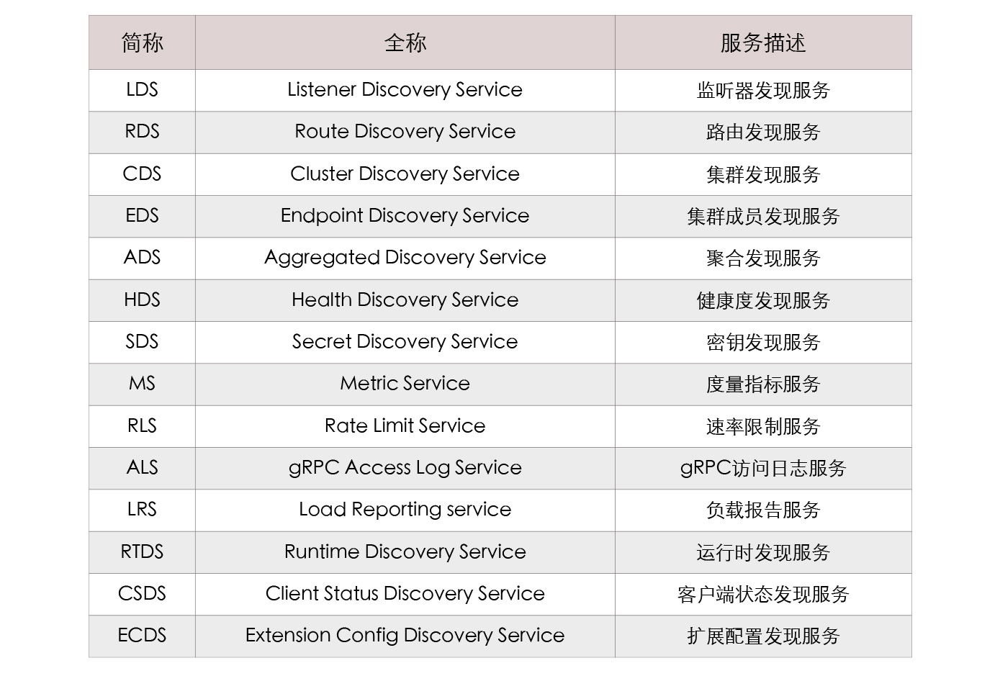

- 00 _导读 _ 什么是“The Fenix Project”？.md.html
- 00 开篇词 _ 如何构建一个可靠的分布式系统？.md.html
- 01 _ 原始分布式时代：Unix设计哲学下的服务探索.md.html
- 02 _ 单体系统时代：应用最广泛的架构风格.md.html
- 03 _ SOA时代：成功理论与失败实践.md.html
- 04 _ 微服务时代：SOA的革命者.md.html
- 05 _ 后微服务时代：跨越软件与硬件之间的界限.md.html
- 06 _ 无服务时代：“不分布式”云端系统的起点.md.html
- 07 _ 远程服务调用（上）：从本地方法到远程方法的桥梁.md.html
- 08 _ 远程服务调用（下）：如何选择适合自己的RPC框架？.md.html
- 09 _ RESTful服务（上）：从面向过程编程到面向资源编程.md.html
- 10 _ RESTful服务（下）：如何评价服务是否RESTful？.md.html
- 11 _ 本地事务如何实现原子性和持久性？.md.html
- 12 _ 本地事务如何实现隔离性？.md.html
- 13 _ 全局事务和共享事务是如何实现的？.md.html
- 14 _ 分布式事务之可靠消息队列.md.html
- 15 _ 分布式事务之TCC与SAGA.md.html
- 16 _ 域名解析系统，优化HTTP性能的第一步.md.html
- 17 _ 客户端缓存是如何帮助服务器分担流量的？.md.html
- 18 _ 传输链路，优化HTTP传输速度的小技巧.md.html
- 19 _ 如何利用内容分发网络来提高网络性能？.md.html
- 20 _ 常见的四层负载均衡的工作模式是怎样的？.md.html
- 21 _ 服务端缓存的三种属性.md.html
- 22 _ 分布式缓存如何与本地缓存配合，提高系统性能？.md.html
- 23 _ 认证：系统如何正确分辨操作用户的真实身份？.md.html
- 24 _ 授权（上）：系统如何确保授权的过程可靠？.md.html
- 25 _ 授权（下）：系统如何确保授权的结果可控？.md.html
- 26 _ 凭证：系统如何保证与用户之间的承诺是准确完整且不可抵赖的？.md.html
- 27 _ 保密：系统如何保证敏感数据无法被内外部人员窃取滥用？.md.html
- 28 _ 传输（上）：传输安全的基础，摘要、加密与签名.md.html
- 29 _ 传输（下）：数字证书与传输安全层.md.html
- 30 _ 验证：系统如何确保提交给服务的数据是安全的？.md.html
- 31 _ 分布式共识（上）：想用好分布式框架，先学会Paxos算法吧.md.html
- 32 _ 分布式共识（下）：Multi Paxos、Raft与Gossip，分布式领域的基石.md.html
- 33 _ 服务发现如何做到持续维护服务地址在动态运维中的时效性？.md.html
- 34 _ 路由凭什么作为微服务网关的基础职能？.md.html
- 35 _ 如何在客户端实现服务的负载均衡？.md.html
- 36 _ 面对程序故障，我们该做些什么？.md.html
- 37 _ 要实现某种容错策略，我们该怎么做？.md.html
- 38 _ 限流的目标与模式.md.html
- 39 _ 如何构建零信任网络安全？.md.html
- 40 _ 如何实现零信任网络下安全的服务访问？.md.html
- 41 _ 分布式架构中的可观测到底说的是什么？.md.html
- 42 _ 分析日志真的没那么简单.md.html
- 43 _ 一个完整的分布式追踪系统是什么样子的？.md.html
- 44 _ 聚合度量能给我们解决什么问题？.md.html
- 45 _ 模块导学：从微服务到云原生.md.html
- 46 _ 容器的崛起（上）：文件、访问、资源的隔离.md.html
- 47 _ 容器的崛起（下）：系统、应用、集群的封装.md.html
- 48 _ 以容器构建系统（上）：隔离与协作.md.html
- 49 _ 以容器构建系统（下）：韧性与弹性.md.html
- 50 _ 应用为中心的封装（上）：Kustomize与Helm.md.html
- 51 _ 应用为中心的封装（下）：Operator与OAM.md.html
- 52 _ Linux网络虚拟化（上）：信息是如何通过网络传输被另一个程序接收到的？.md.html
- 53 _ Linux网络虚拟化（下）：Docker所提供的容器通讯方案有哪些？.md.html
- 54 _ 容器网络与生态：与CNM竞争过后的CNI下的网络插件生态.md.html
- 55 _ 谈谈Kubernetes的存储设计理念.md.html
- 56 _ Kubernetes存储扩展架构：一个真实的存储系统如何接入或移除新存储设备？.md.html
- 57 _ Kubernetes存储生态系统：几种有代表性的CSI存储插件的实现.md.html
- 58 _ Kubernetes的资源模型与调度器设计.md.html
- 59 _ 透明通讯的涅槃（上）：通讯的成本.md.html
- 60 _ 透明通讯的涅槃（下）：控制平面与数据平面.md.html
- 61 _ 服务网格与生态：聊聊服务网格的两项标准规范.md.html
- 62 _ Fenix's Bookstore的前端工程.md.html
- 63 _ 基于Spring Boot的单体架构.md.html
- 64 _ 基于Spring Cloud的微服务架构.md.html
- 65 _ 基于Kubernetes的微服务架构.md.html
- 66 _ 基于Istio的服务网格架构.md.html
- 67 _ 基于云计算的无服务架构.md.html
- 春节特别放送（上）_ 有的放矢，事半功倍.md.html
- 春节特别放送（下）_ 积累沉淀，知行合一.md.html
- 用户故事 _ 詹应达：持续成长，不惧未来.md.html
- 结束语 _ 程序员之路.md.html
- 结课测试 _ 一套习题，测出你的掌握程度.md.html
- 捐赠
60 _ 透明通讯的涅槃（下）：控制平面与数据平面
你好，我是周志明。这节课，我会延续服务网格将“程序”与“网络”解耦的思路，通过介绍几个数据平面通信与控制平面通信中的核心问题的解决方案，帮助你更好地理解这两个概念。
在开始之前我想先说明一点，就是我们知道在工业界，数据平面领域已经有了Linkerd、Nginx、Envoy等产品，在控制平面领域也有Istio、Open Service Mesh、Consul等产品。不过今天我主要讲解的是目前市场占有率最高的Istio与Envoy，因为我的目的是要让你理解两种平面通信的技术原理，而非介绍Istio和Envoy的功能与用法，这节课中涉及到的原理在各种服务网格产品中一般都是通用的，并不局限于哪一种具体实现。
好，接下来我们就从数据平面通信开始，来了解一下它的工作内容。
数据平面
首先，数据平面由一系列边车代理所构成，它的核心职责是转发应用的入站（Inbound）和出站（Outbound）数据包，因此数据平面也有个别名叫转发平面（Forwarding Plane）。
同时，为了在不可靠的物理网络中保证程序间通信最大的可靠性，数据平面必须根据控制平面下发策略的指导，在应用无感知的情况下自动完成服务路由、健康检查、负载均衡、认证鉴权、产生监控数据等一系列工作。
那么，为了顺利完成以上所说的工作目标，数据平面至少需要妥善解决三个关键问题：
- 代理注入：边车代理是如何注入到应用程序中的？
- 流量劫持：边车代理是如何劫持应用程序的通信流量的？
- 可靠通信：边车代理是如何保证应用程序的通信可靠性的？
好，下面我们就具体来看看吧。
代理注入
从职责上说，注入边车代理是控制平面的工作，但从叙述逻辑上，将其放在数据平面中介绍更合适。因为把边车代理注入到应用的过程并不一定全都是透明的，所以现在的服务网格产品产生了以下三种将边车代理接入到应用程序中的方式。
- 基座模式（Chassis）：这种方式接入的边车代理对程序就是不透明的，它至少会包括一个轻量级的SDK，让通信由SDK中的接口去处理。基座模式的好处是在程序代码的帮助下，有可能达到更好的性能，功能也相对更容易实现。但坏处是对代码有侵入性，对编程语言有依赖性。这种模式的典型产品是由华为开源后捐献给Apache基金会的ServiceComb Mesher。基座模式的接入方式目前并不属于主流方式，我也就不展开介绍了。
- 注入模式（Injector）：根据注入方式不同，又可以分为：
- 手动注入模式：这种接入方式对使用者来说不透明，但对程序来说是透明的。由于边车代理的定义就是一个与应用共享网络名称空间的辅助容器，这天然就契合了Pod的设定。因此在Kubernetes中要进行手动注入是十分简单的——就只是为Pod增加一个额外容器而已，即使没有工具帮助，自己修改Pod的Manifest也能轻易办到。如果你以前未曾尝试过，不妨找一个Pod的配置文件，用
istioctl kube-inject -f YOUR_POD.YAML命令来查看一下手动注入会对原有的Pod产生什么变化。 - 自动注入模式：这种接入方式对使用者和程序都是透明的，也是Istio推荐的代理注入方式。在Kubernetes中，服务网格一般是依靠“动态准入控制”（Dynamic Admission Control）中的Mutating Webhook控制器来实现自动注入的。
- 手动注入模式：这种接入方式对使用者来说不透明，但对程序来说是透明的。由于边车代理的定义就是一个与应用共享网络名称空间的辅助容器，这天然就契合了Pod的设定。因此在Kubernetes中要进行手动注入是十分简单的——就只是为Pod增加一个额外容器而已，即使没有工具帮助，自己修改Pod的Manifest也能轻易办到。如果你以前未曾尝试过，不妨找一个Pod的配置文件，用
额外知识- istio-proxy是Istio对Envoy代理的包装容器，其中包含用Golang编写的
pilot-agent和用C++编写的envoy两个进程。pilot-agent进程负责Envoy的生命周期管理，比如启动、重启、优雅退出等，并维护Envoy所需的配置信息，比如初始化配置、随时根据控制平面的指令热更新Envoy的配置等。
这里我以Istio自动注入边车代理（istio-proxy容器）的过程为例，给你介绍一下自动注入的具体的流程。只要你对Istio有基本的了解，你应该就能都知道，对任何设置了istio-injection=enabled标签的名称空间，Istio都会自动为其中新创建的Pod，注入一个名为istio-proxy的容器。之所以能做到自动这一点，是因为Istio预先在Kubernetes中注册了一个类型为MutatingWebhookConfiguration的资源，它的主要内容如下所示：
apiVersion: admissionregistration.k8s.io/v1beta1
kind: MutatingWebhookConfiguration
metadata:
name: istio-sidecar-injector
.....
webhooks:
- clientConfig:
service:
name: istio-sidecar-injector
namespace: istio-system
path: /inject
name: sidecar-injector.istio.io
namespaceSelector:
matchLabels:
istio-injection: enabled
rules:
- apiGroups:
- ""
apiVersions:
- v1
operations:
- CREATE
resources:
- pods
以上配置其实就告诉了Kubernetes，对于符合标签istio-injection: enabled的名称空间，在Pod资源进行CREATE操作时，应该先自动触发一次Webhook调用，调用的位置是istio-system名称空间中的服务istio-sidecar-injector，调用具体的URL路径是/inject。
在这次调用中，Kubernetes会把拟新建Pod的元数据定义作为参数发送给此HTTP Endpoint，然后从服务返回结果中得到注入了边车代理的新Pod定义，以此自动完成注入。
流量劫持
边车代理做流量劫持最典型的方式是基于iptables进行的数据转发，我曾在“Linux网络虚拟化”这个小章节中介绍过Netfilter与iptables的工作原理。这里我仍然以Istio为例，它在注入边车代理后，除了生成封装Envoy的istio-proxy容器外，还会生成一个initContainer，这个initContainer的作用就是自动修改容器的iptables，具体内容如下所示：
initContainers:
image: docker.io/istio/proxyv2:1.5.1
name: istio-init
- command:
- istio-iptables -p "15001" -z "15006"-u "1337" -m REDIRECT -i '*' -x "" -b '*' -d 15090,15020
以上命令行中的istio-iptables是Istio提供的用于配置iptables的Shell脚本，这行命令的意思是让边车代理拦截所有的进出Pod的流量，包括拦截除15090、15020端口（这两个分别是Mixer和Ingress Gateway的端口，关于Istio占用的固定端口你可以参考官方文档所列的信息）外的所有入站流量，全部转发至15006端口（Envoy入站端口），经Envoy处理后，再从15001端口（Envoy出站端口）发送出去。
这个命令会在iptables中的PREROUTING和OUTPUT链中，挂载相应的转发规则，使用iptables -t nat -L -v命令，你可以查看到如下所示配置信息：
Chain PREROUTING
pkts bytes target prot opt in out source destination
2701 162K ISTIO_INBOUND tcp -- any any anywhere anywhere
Chain OUTPUT
pkts bytes target prot opt in out source destination
15 900 ISTIO_OUTPUT tcp -- any any anywhere anywhere
Chain ISTIO_INBOUND (1 references)
pkts bytes target prot opt in out source destination
0 0 RETURN tcp -- any any anywhere anywhere tcp dpt:ssh
2 120 RETURN tcp -- any any anywhere anywhere tcp dpt:15090
2699 162K RETURN tcp -- any any anywhere anywhere tcp dpt:15020
0 0 ISTIO_IN_REDIRECT tcp -- any any anywhere anywhere
Chain ISTIO_IN_REDIRECT (3 references)
pkts bytes target prot opt in out source destination
0 0 REDIRECT tcp -- any any anywhere anywhere redir ports 15006
Chain ISTIO_OUTPUT (1 references)
pkts bytes target prot opt in out source destination
0 0 RETURN all -- any lo 127.0.0.6 anywhere
0 0 ISTIO_IN_REDIRECT all -- any lo anywhere !localhost owner UID match 1337
0 0 RETURN all -- any lo anywhere anywhere ! owner UID match 1337
15 900 RETURN all -- any any anywhere anywhere owner UID match 1337
0 0 ISTIO_IN_REDIRECT all -- any lo anywhere !localhost owner GID match 1337
0 0 RETURN all -- any lo anywhere anywhere ! owner GID match 1337
0 0 RETURN all -- any any anywhere anywhere owner GID match 1337
0 0 RETURN all -- any any anywhere localhost
0 0 ISTIO_REDIRECT all -- any any anywhere anywhere
Chain ISTIO_REDIRECT (1 references)
pkts bytes target prot opt in out source destination
0 0 REDIRECT tcp -- any any anywhere anywhere redir ports 1
实际上，用iptables进行流量劫持是最经典、最通用的手段。不过，iptables重定向流量必须通过回环设备（Loopback）交换数据，流量不得不多穿越一次协议栈，如下图所示。
其实，这种方案在网络I/O不构成主要瓶颈的系统中并没有什么不妥，但在网络敏感的大并发场景下会因转发而损失一定的性能。因而目前，如何实现更优化的数据平面流量劫持，仍然是服务网格发展的前沿研究课题之一。
其中一种可行的优化方案，是使用eBPF（Extended Berkeley Packet Filter）技术，在Socket层面直接完成数据转发，而不需要再往下经过更底层的TCP/IP协议栈的处理，从而减少它数据在通信链路的路径长度。
另一种可以考虑的方案，是让服务网格与CNI插件配合来实现流量劫持，比如Istio就有提供自己实现的CNI插件。只要安装了这个CNI插件，整个虚拟化网络都由Istio自己来控制，那自然就无需再依赖iptables，也不必存在initContainers配置和istio-init容器了。
这种方案有很高的上限与自由度，不过，要实现一个功能全面、管理灵活、性能优秀、表现稳定的CNI网络插件决非易事，连Kubernetes自己都迫不及待想从网络插件中脱坑，其麻烦程度可想而知，因此目前这种方案使用并不广泛。
流量劫持技术的发展与服务网格的落地效果密切相关，有一些服务网格通过基座模式中的SDK也能达到很好的转发性能，但考虑到应用程序通用性和环境迁移等问题，无侵入式的低时延、低管理成本的流量劫持方案仍然是研究的主流方向。
可靠通信
注入边车代理、劫持应用流量，最终的目的都是为了代理能够接管应用程序的通信，然而，在代理接管了应用的通信之后，它会做什么呢？这个问题的答案是：不确定。
代理的行为需要根据控制平面提供的策略来决定，传统的代理程序，比如HAProxy、Nginx是使用静态配置文件来描述转发策略的，而这种静态配置很难跟得上应用需求的变化与服务扩缩时网络拓扑结构的变动。
因此针对这个问题，Envoy在这方面进行了创新，它将代理的转发的行为规则抽象成Listener、Router、Cluster三种资源。以此为基础，它又定义了应该如何发现和访问这些资源的一系列API，现在这些资源和API被统称为“xDS协议族”。自此以后，数据平面就有了如何描述各种配置和策略的事实标准，控制平面也有了与控制平面交互的标准接口，目前xDS v3.0协议族已经包含有以下具体协议：

这里我就不逐一介绍这些协议了，但我要给你说明清楚它们一致的运作原理。其中的关键是解释清楚这些协议的共同基础，即Listener、Router、Cluster三种资源的具体含义。
- Listener
Listener可以简单理解为Envoy的一个监听端口，用于接收来自下游应用程序（Downstream）的数据。Envoy能够同时支持多个Listener，且不同的Listener之间的策略配置是相互隔离的。
自动发现Listener的服务被称为LDS（Listener Discovery Service），它是所有其他xDS协议的基础，如果没有LDS（也没有在Envoy启动时静态配置Listener的话），其他所有xDS服务也就失去了意义，因为没有监听端口的Envoy不能为任何应用提供服务。
- Cluster
Cluster是Envoy能够连接到的一组逻辑上提供相同服务的上游（Upstream）主机。Cluster包含该服务的连接池、超时时间、Endpoints地址、端口、类型等信息。具体到Kubernetes环境下，可以认为Cluster与Service是对等的概念，但是Cluster实际上还承担了服务发现的职责。
自动发现Cluster的服务被称为CDS（Cluster Discovery Service），通常情况下，控制平面会将它从外部环境中获取的所有可访问服务全量推送给Envoy。与CDS紧密相关的另一种服务是EDS（Endpoint Discovery Service）。当Cluster的类型被标识为需要EDS时，则说明该Cluster的所有Endpoints地址应该由xDS服务下发，而不是依靠DNS服务去解析。
- Router
Listener负责接收来自下游的数据，Cluster负责将数据转发送给上游的服务，而Router则决定Listener在接收到下游的数据之后，具体应该将数据交给哪一个Cluster处理。由此定义可知，Router实际上是承担了服务网关的职责。
自动发现Router的服务被称为RDS（Router Discovery Service），Router中最核心的信息是目标Cluster及其匹配规则，即实现网关的路由职能。此外，根据Envoy中的插件配置情况，也可能包含重试、分流、限流等动作，实现网关的过滤器职能。
Envoy的另外一个设计重点是它的Filter机制，Filter通俗地讲就是Envoy的插件，通过Filter机制，Envoy就可以提供强大的可扩展能力。插件不仅是无关重要的外围功能，很多Envoy的核心功能都是用Filter来实现的，比如对HTTP流量的治理、Tracing机制、多协议支持，等等。
另外，利用Filter机制，Envoy理论上还可以实现任意协议的支持以及协议之间的转换，也可以在实现对请求流量进行全方位的修改和定制的同时，还保持较高的可维护性。
控制平面
如果说数据平面是行驶中的车辆，那控制平面就是车辆上的导航系统；如果说数据平面是城市的交通道路，那控制平面就是路口的指示牌与交通信号灯。控制平面的特点是不直接参与程序间通信，只会与数据平面中的代理通信。在程序不可见的背后，默默地完成下发配置和策略，指导数据平面工作。
由于服务网格（暂时）没有大规模引入计算机网络中管理平面（Management Plane）等其他概念，所以控制平面通常也会附带地实现诸如网络行为的可视化、配置传输等一系列管理职能（其实还是有专门的管理平面工具的，比如Meshery、ServiceMeshHub）。这里我仍然以Istio为例具体介绍一下控制平面的主要功能。
Istio在1.5版本之前，Istio自身也是采用微服务架构开发的，它把控制平面的职责分解为Mixer、Pilot、Galley、Citadel四个模块去实现，其中Mixer负责鉴权策略与遥测；Pilot负责对接Envoy的数据平面，遵循xDS协议进行策略分发；Galley负责配置管理，为服务网格提供外部配置感知能力；Citadel负责安全加密，提供服务和用户层面的认证和鉴权、管理凭据和RBAC等安全相关能力。
不过，经过两、三年的实践应用，很多用户都在反馈Istio的微服务架构有过度设计的嫌疑。lstio在定义项目目标时，曾非常理想化地提出控制平面的各个组件都应可以独立部署，然而在实际的应用场景里却并不是这样，独立的组件反而带来了部署复杂、职责划分不清晰等问题。
（图片来自Istio官方文档）
因此，从1.5版本起，Istio重新回归单体架构，把Pilot、Galley、Citadel的功能全部集成到新的Istiod之中。当然，这也并不是说完全推翻之前的设计，只是将原有的多进程形态优化成单进程的形态，让之前各个独立组件变成了Istiod的内部逻辑上的子模块而已。
单体化之后出现的新进程Istiod就承担所有的控制平面职责，具体包括以下几种。
1. 数据平面交互：这是部分是满足服务网格正常工作所需的必要工作。
具体包括以下几个方面：
- 边车注入：在Kubernetes中注册Mutating Webhook控制器，实现代理容器的自动注入，并生成Envoy的启动配置信息。
- 策略分发：接手了原来Pilot的核心工作，为所有的Envoy代理提供符合xDS协议的策略分发的服务。
- 配置分发：接手了原来Galley的核心工作，负责监听来自多种支持配置源的数据，比如kube-apiserver，本地配置文件，或者定义为网格配置协议（Mesh Configuration Protocol，MCP）的配置信息。原来Galley需要处理的API校验和配置转发功能也包含在内。
2. 流量控制：这通常是用户使用服务网格的最主要目的。
具体包括以下几个方面：
- 请求路由：通过VirtualService、DestinationRule 等Kubernetes CRD资源实现了灵活的服务版本切分与规则路由。比如根据服务的迭代版本号（如v1.0版、v2.0版）、根据部署环境（如Development版、Production版）作为路由规则来控制流量，实现诸如金丝雀发布这类应用需求。
- 流量治理：包括熔断、超时、重试等功能，比如通过修改Envoy的最大连接数，实现对请求的流量控制；通过修改负载均衡策略，在轮询、随机、最少访问等方式间进行切换；通过设置异常探测策略，将满足异常条件的实例从负载均衡池中摘除，以保证服务的稳定性等等。
- 调试能力：包括故障注入和流量镜像等功能，比如在系统中人为设置一些故障，来测试系统的容错稳定性和系统恢复的能力。又比如通过复制一份请求流量，把它发送到镜像服务，从而满足 A/B验证的需要。
3. 通信安全：包括通信中的加密、凭证、认证、授权等功能。
具体包括以下几个方面：
- 生成CA证书：接手了原来Galley的核心工作，负责生成通信加密所需私钥和CA证书。
- SDS服务代理：最初Istio是通过Kubernetes的Secret卷的方式将证书分发到Pod中的，从Istio 1.1之后改为通过SDS服务代理来解决。这种方式保证了私钥证书不会在网络中传输，仅存在于SDS代理和Envoy的内存中，证书刷新轮换也不需要重启Envoy。
- 认证：提供基于节点的服务认证和基于请求的用户认证，这项功能我曾在服务安全的“认证”中详细介绍过。
- 授权：提供不同级别的访问控制，这项功能我也曾在服务安全的“授权”中详细介绍过。
4. 可观测性：包括日志、追踪、度量三大块能力。
具体包括以下几个方面：
- 日志收集：程序日志的收集并不属于服务网格的处理范畴，通常会使用ELK Stack去完成，这里是指远程服务的访问日志的收集，对等的类比目标应该是以前Nginx、Tomcat的访问日志。
- 链路追踪：为请求途经的所有服务生成分布式追踪数据并自动上报，运维人员可以通过Zipkin等追踪系统从数据中重建服务调用链，开发人员可以借此了解网格内服务的依赖和调用流程。
- 指标度量：基于四类不同的监控标识（响应延迟、流量大小、错误数量、饱和度）生成一系列观测不同服务的监控指标，用于记录和展示网格中服务状态。
小结
容器编排系统管理的最细粒度只能到达容器层次，在此粒度之下的技术细节，仍然只能依赖程序员自己来管理，编排系统很难提供有效的支持。
2016年，原Twitter基础设施工程师威廉·摩根（William Morgan）和奥利弗·古尔德（Oliver Gould）在GitHub上发布了第一代的服务网格产品Linkerd，并在很短的时间内围绕着Linkered组建了Buoyant公司。而后担任CEO的威廉·摩根在发表的文章《What’s A Service Mesh? And Why Do I Need One?》中，首次正式地定义了“服务网格”（Service Mesh）一词。
此后，服务网格作为一种新兴通信理念开始迅速传播，越来越频繁地出现在各个公司以及技术社区的视野中。之所以服务网格能够获得企业与社区的重视，就是因为它很好地弥补了容器编排系统对分布式应用细粒度管控能力高不足的缺憾。
说实话，服务网格并不是什么神秘难以理解的黑科技，它只是一种处理程序间通信的基础设施，典型的存在形式是部署在应用旁边，一对一为应用提供服务的边车代理，以及管理这些边车代理的控制程序。
“边车”（Sidecar）本来就是一种常见的容器设计模式，用来形容外挂在容器身上的辅助程序。早在容器盛行以前，边车代理就就已经有了成功的应用案例。
比如2014年开始的Netflix Prana项目，由于Netfilix OSS套件是用Java语言开发的，为了让非JVM语言的微服务（比如以Python、Node.js编写的程序）也同样能接入Netfilix OSS生态，享受到Eureka、Ribbon、Hystrix等框架的支持，Netflix建立了Prana项目，它的作用是为每个服务都提供一个专门的HTTP Endpoint，以此让非JVM语言的程序能通过访问该Endpoint，来获取系统中所有服务的实例、相关路由节点、系统配置参数等在Netfilix组件中管理的信息。
Netflix Prana的代理需要由应用程序主动去访问才能发挥作用，但在容器的刻意支持下，服务网格不需要应用程序的任何配合，就能强制性地对应用通信进行管理。
它使用了类似网络攻击里中间人流量劫持的手段，完全透明（既无需程序主动访问，也不会被程序感知到）地接管容器与外界的通信，把管理的粒度从容器级别细化到了每个单独的远程服务级别，这就让基础设施干涉应用程序、介入程序行为的能力大为增强。
如此一来，云原生希望用基础设施接管应用程序非功能性需求的目标，就能更进一步。从容器粒度延伸到远程访问，分布式系统继容器和容器编排之后，又发掘到了另一块更广袤的舞台空间。
一课一思
服务网格中，数据平面、控制平面的概念是从计算机网络中的SDN（软件定义网络）借用过来的，在此之前，你是否有接触过SDN方面的知识呢？它与今天的服务网格有哪些联系与差异？
欢迎在留言区分享你的答案和见解。如果你觉得有收获，也欢迎把今天的内容分享给更多的朋友。感谢你的阅读，我们下一讲再见。
© 2019 - 2023 Liangliang Lee. Powered by gin and hexo-theme-book.